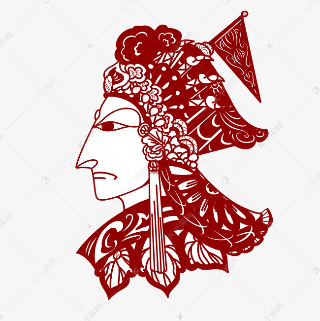
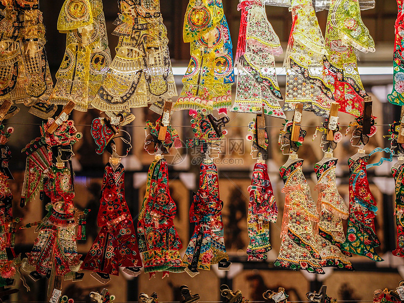

皮影戏是中国民间传统艺术的重要组成部分，其制作过程非常繁琐，需要经过多道工序。 制作皮影的首要步骤是选材。通常，皮影的原材料为牛皮或羊皮。选择皮质的材料是因为它们具有较好的透光性和耐用性，可以长时间使用而不易损坏。在选择材料时，要挑选质地柔软、厚实且无瑕疵的皮张，以保证皮影的质地和效果。选好皮张后，要进行初步的处理，以去除杂质和血筋。通常采用刮刀、砂纸等工具，将皮张上的脂肪、毛刺等杂质刮干净，并打磨光滑。
剪样是皮影制作的重要坏节之一，需要根据剧本和角色形象的要求，将处理好的皮张进行剪裁。剪样时要特别注意细节和线条的流畅性，力求做到精细美观。同时，要根据角色的不同特点，如性别、年龄、身份等，选择合适的造型和比例，以突出角色的个性特征。雕刻是皮影制作的核心环节之一，需要艺人具备精湛的雕刻技艺。通常采用阳刻或阴刻的方式进行雕刻，根据剧本要求和角色形象特点进行细节处理。雕刻时要特别注意刀法的运用和线条的流畅性，力求做到精细美观。
上色是皮影制作的重要环节之一，需要在雕刻好的皮影表面上色。通常采用传统的中国画颜料或水彩等颜料进行上色。上色时要特别注意色彩的搭配和层次的分明，力求做到鲜艳美观。同时，要根据不同的角色和场景需求，选择合适的颜色和上色技巧，以增强皮影的艺术表现力和视觉效果。组装是皮影制作的最后环节之一，需要将上好色的皮影部件进行组装。通常采用竹签或铁丝等材料进行连接，以便于表演时的操作。组装时要特别注意各个部件的协调性和稳定性，力求做到美观实用。
传承千年文化，感受中华魂魄-皮影戏